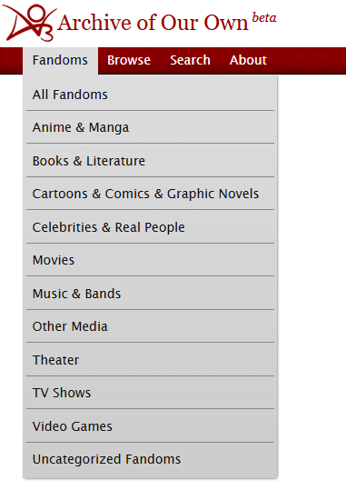
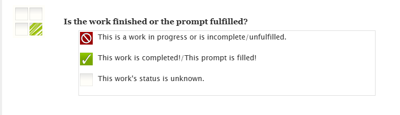
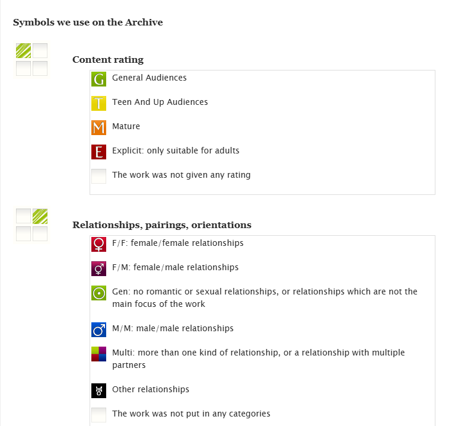
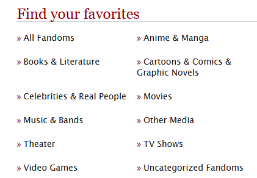
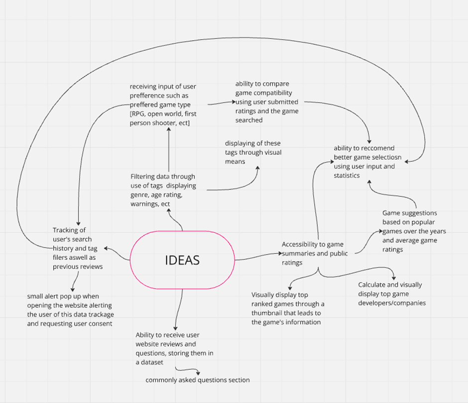

For my project, I want to appeal to video game and online media consummers since online media (be it movies, comics, stories, games, ect.) is a subject of personal interest to me and I believe theres a large demand for information concerning online media. This is evident by the existence of websites such as fandom.com where people can research and access publicly available information on different characters, games, topics and franchises organised in an orderly fashion.
My goal is to create a website that facilitates the accessibility to such organised information akin to fandom.com but that can also give recommendations to the user through an input of preferred genres, previously enjoyed media works or previously enjoyed creators. One thing about wiki fandom I enjoyed was the usage of playful icons to separate the different pieces of media the user can research. As displayed on the left , a user can select to access information from six different categories. I want to target my project mostly towards the gaming media since it has a vast variety of genres, topics and consumer bases but also because there are many people who would be interested in information about their desired game. I also want to successfully implement the usage of content tags similar to that of Archive of our own, examples shown below
The usage of tags such as the ones displayed would make it easier to filter data to the user’s liking and a user can discern a lot about the content being displayed simply from a symbol like in the lower two images. Ideally my code should be able to automatically sort through the give dataset and assign each game present its appropriate tags. When looking for a dataset, I used the provided Kaggle link and found six main datasets I had interest in. ‘Hollywood Theatrical Market Synopsis 1995 to 2021’ and ‘Horror Movie dataset’ I didn’t choose because there were too many CSV files included and I didn’t find the media worth pursuing. I had a lot more interest in the videogame aspect of media exploration so instead I chose ‘Steam Games Dataset’ by Martin Bustos which has more than 97,000 games published by Steam since it was most likely to be able to appeal to a large part of the gaming community and had a manageable amount of data.
Unfortunately due to time constraints, not all features planned in my initial mind map came to fruition.